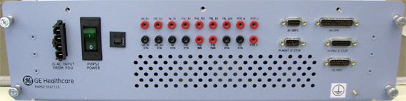
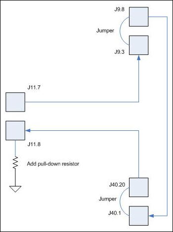

Operating Documentation
Direction 5670006, Rev# 1
Discovery MR750w GEM Service Methods
Module Version 1.0, Version Date 7/7/08
Operating Documentation |
The PHPS2 consists of two (2) multiple output power supply modules, a Motion Control Power Distribution Board (MCPDB), and a pulse width modulated servo amplifier. One of the power supplies, Magnet supply, provides DC power to the following modules:
SRI-4 (Scan Room Interface)
In-Room Monitor
1-Wire Secondary Diagnostic Network
PAC (Physiological Acquisition Controller)
CFB (CAN Fiber Optic Board)
The second power supply, Table Supply, provides DC power to:
MCPDB
Dock motor for vertical movement of the Patient Table
Servo Amplifier
The servo amplifier switches 60VDC to a brushless DC motor to control longitudinal table motion. Switching is based on CAN control commands sent over fiber from the SRI4. The CFB can communicate with the servo amplifier as well, via RS-232 over copper. An enable signal, sent by the SRI4, switches a solid-state relay onboard the MCPDB. This allows power switched by the servo amplifier to pass through to the motor output connector.
The power provided to the MCPDB by the Table Power Supply is regulated to 5V for use on the board. The primary functions of this board are:
Patient Comfort Fan control
Longitudinal motor drive control
Communication of status of both power supplies and the servo amplifier to the CFB
PHPS2 ambient temperature monitoring
This section describes assorted Patient Handling specifications:
Precautions-208VAC, connector J1 will have 208VAC on it when power is supplied to the PHPS2. The Bore Vent Fan connector (J44) may have 208VAC on it depending on the status of the Bore Vent Fan Control signal from the SRI. 60VDC, beware of 60VDC on both J35 and J36.
Power Supply Requirements-The AC power applied to the module shall be dual-phase, 208VAC +/- 10%. The PHPS2 pulls less than 9 Amps (circuit breaker = 10A) when utilized at its full capacity.
Initial Module Conditions-The UUT shall be fully assembled and meet the following conditions:
⇒ Motion Controller pre-programmed with correct firmware (*.CFF) and configuration (*.CCX) file. Reference 5260554INS.
⇒ Thermal Rocker switch on front panel is in the “OFF” position.
Test Equipment/Fixturing-The testing procedure requires:
⇒ UUT Test Interface Board with appropriate connector interfaces & loads.
⇒ Host PC with Serial Communication Port & CAN Communication Interface.
⇒ Longitudinal drive motor and gearbox assembly (GE Part Number 5140863) provided by GEHC.
⇒ DVM capable of DC voltage measurements as well as AC voltages up to 228.8VAC (208VAC + 10%).
⇒ 208VAC Source at a minimum of 9A.
There are 18 test points on the equipment room side of the PHPS2. All test points are clearly marked with their voltages and description. See Illustration 1
Illustration 1: Front Panel

A 10-Amp circuit breaker designated “PHPS2 Power” with indicator light is located on the front panel of the PHPS2. Additionally, a small push-to-reset fuse resides on the equipment room side of the PHPS2. This small fuse interrupts the Patient Comfort Fan circuit and is normally in the on position. It will open up under fault conditions and can be manually reset provided the fault is removed. During all testing, the circuit breaker “PHPS2 Power” must be in the “ON” position unless otherwise specified.
Illustration 2: Rear Panel

I/O Connectors: Front Panel
J1 - AC Input Power-Derives power from the PDU.
J8 - SRPS Connector-The SRPS Connector shall deliver the following signals into the PHPS2. It shall be a 9-pin socket Panel-Mount Sub-D Connector.
J9 - Host E-Stop Connector-The Host E-stop Connector shall deliver the following signals into the PHPS2. It shall be a 9-pin socket Panel-Mount Sub-D Connector.
J10 - CAN Fiber Optic Board Connector-This connector deliver the following control signals to the CAN Fiber Optic Board (CFB). The interface shall be a 25-pin Plug Panel-Mount Sub-D Connector.
J11 - PDU E-Stop Connector-The PDU ESTOP connector shall distribute the following signals into the PHPS2. The interface shall be a 15-pin Panel-Mount Socket Sub-D Connector.
J12 - Host Connector-The Host Input connector shall distribute the following signals into the PHPS2. The interface shall be a 15-pin Plug Panel-Mount Sub-D Connector.
I/O Connectors: Rear Panel
J35 - Dock Power Connector-The Dock Power Connector shall be a 37-pin Sub-D Right-Angle Socket Connector.
J36 - Motor Power Connector-The Motor Output Connector shall be a 25-pin Plug Right-Angle Sub-D Connector.
J37 - CAN TX Fiber Optic Connector-The CAN TX fiber optic connector sends CAN signals to the SRI4.
J38 - CAN RX Fiber Optic Connector-The CAN RX fiber optic connector receives CAN signals from the SRI4.
J39 - SRI4 Interface Connector-The SRI4 Interface connector shall be a 37 Pin Plug Right-Angle Sub-D Connector and shall supply interface signals between the Copley controller and SRI4. The interface connector shall be the top connector on a stacked sub-D.
J40 - SRI4 Power Connector-The SRI4 Output connector shall be a stacked 37-Pin Right-Angle Socket Sub-D Connector and shall supply power and signals to the SRI4. The power connector shall be the lower connector on the stacked connector.
J41 - PAC Power Connector-The PAC Output Connector shall be a 25-pin Socket Right-Angle Sub-D Connector.
J42 - Display Power Connector-The Display Power Connector shall be a 15-Pin Socket Sub-D Right-Angle Connector.
J43 - 1-Wire Spare Connector-The Spare Output Connector shall provide 1-Wire connectivity to the Scan Room through a stacked 9-Pin Plug Right-Angle Sub-D connector. This shall be the lower connector on the stacked connector.
J44 - Bore Vent Fan Connector-The Bore Vent Fan connector supplies AC Power to the Bore Fan for Multi-Speed Bore Fan Control. This connector is an external connector on the PHPS2 enclosure. This shall be a 1x5 Panel-Mount Mate-N-Lock Socket Connector. Note: Line Voltage from FAN_HIGH, FAN_MED, or FAN_LOW with respect to FAN_120_NEUTRAL will provide 208VAC to the Bore Vent Fan.
J54 - Commutation Signals Connector-The commutation encoder signal shall be the upper connector of a 9-pin stacked sub-D. It sends Digital Hall signals to the servo amplifier for motor phasing.
Illustration 3: E-Stop Circuit
